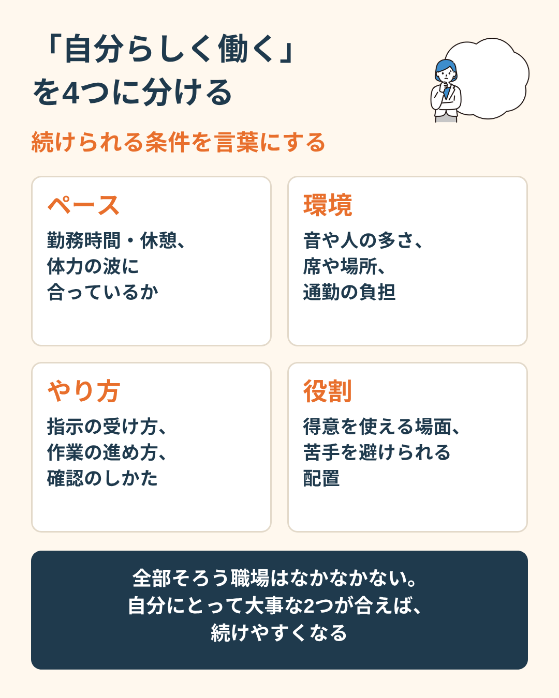
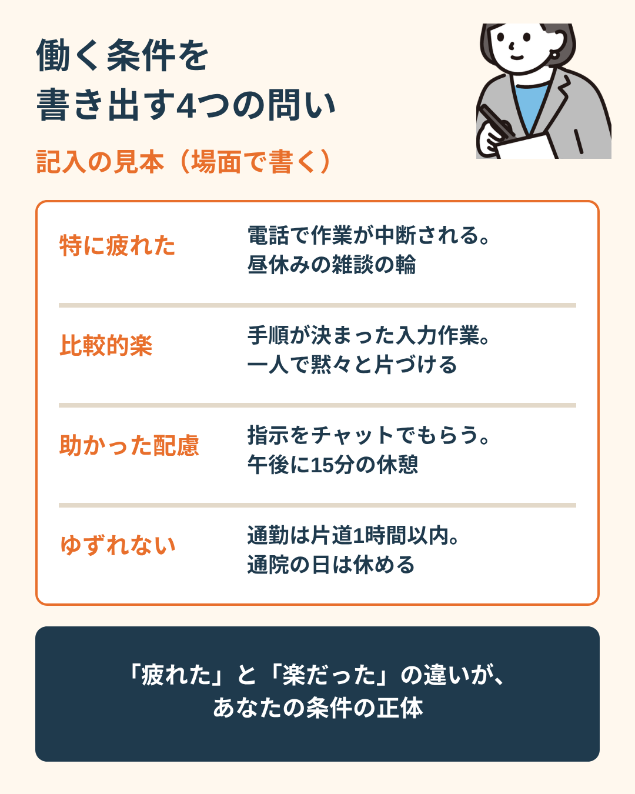
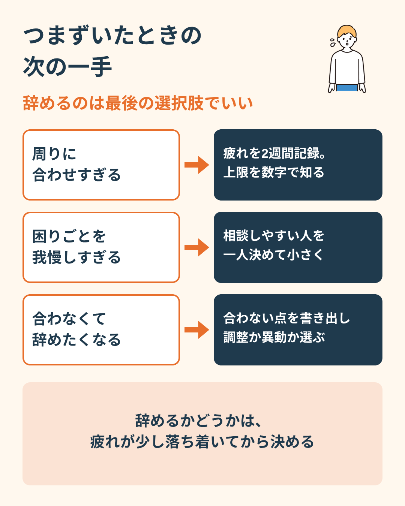
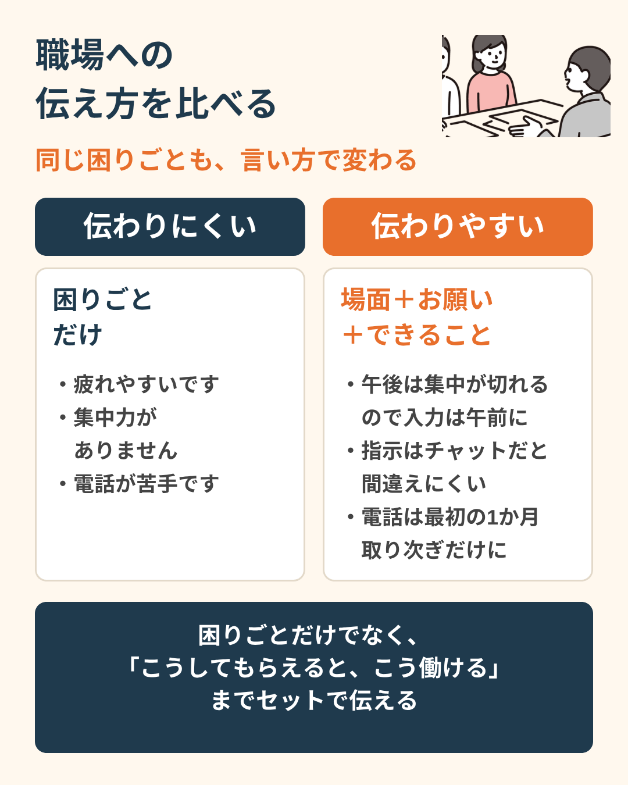
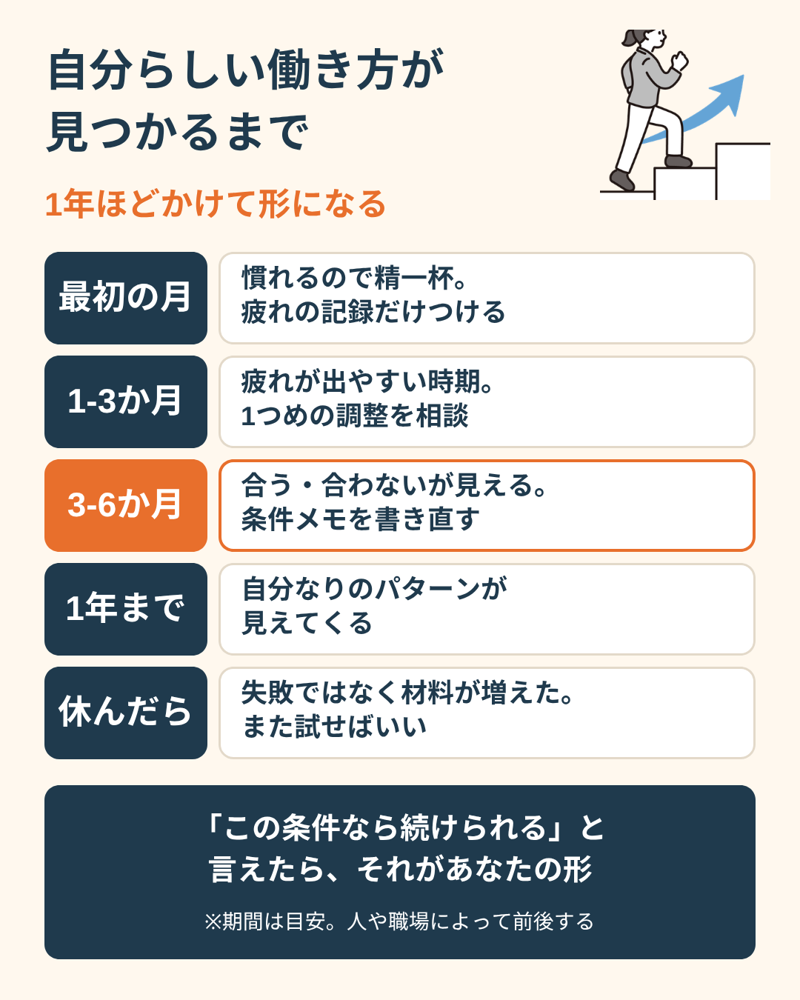

「自分らしく働く」がしんどく聞こえる理由と、この記事での意味
「自分らしく働こう」という言葉は、前向きに聞こえる一方で、今うまくいっていない人には重く響くことがあります。理由のひとつは、この言葉が「やりたいことが決まっている人」「好きなことを仕事にしている人」を前提にしているように聞こえることです。やりたいことが特にない、体調を保つだけで精一杯という状態のときに「あなたらしさは？」と聞かれても、答えようがありません。答えられない自分を責めてしまい、かえって疲れる人もいます。
もうひとつは、障害や病気があると「自分らしく」と「周りに迷惑をかけない」がぶつかるように感じることです。音が多い場所がつらい、急な予定変更で頭が真っ白になる、午後になると集中が切れる。こうした特性を出すことは、わがままのように思えて、つい周りのペースに合わせてしまいます。その結果、半年ほどで体調を崩して休む、という流れを何度も経験している人もいます。
そこでこの記事では、「自分らしく働く」をもう少し地に足のついた意味で使います。自分が無理なく続けられる「条件」を言葉にし、その条件に近い仕事や職場を選ぶこと、選べないときは職場と調整することです。理想の天職を探すことではありません。「午前中に集中する作業を入れられると助かる」「指示はメモでもらえると間違えにくい」といった、具体的な条件の積み重ねです。条件は大きく4つに分けて考えると整理しやすくなります。

4つが全部そろう職場は、障害があってもなくても、なかなかありません。大切なのは、自分にとってどれが特に重要かを知っておくことです。たとえば、ペースと環境が合っていれば、仕事の内容が多少苦手でも続けられる人がいます。逆に、仕事内容が好きでも、毎日の満員電車と長時間勤務で体がもたない人もいます。働く意味そのものに迷っているときは、「何のために働くのか分からない」ときの考え方もあわせて読んでみてください。
「『自分らしく』と言われるたびに、そんなものないよ、と思っていました。支援員さんに『じゃあ、今までで一番ましだった職場はどこ？』と聞かれて、倉庫のピッキングの話をしたら、『黙々とできる』『終わりが見える』が大事なんだね、と言われて。それが最初の手がかりでした。」
自分の「働く条件」を書き出す4つの問い
条件を言葉にするといっても、白紙を前に「自分の強みは？」と考えると手が止まります。おすすめは、過去の具体的な場面から書き出す方法です。アルバイト、前の職場、学校、実習、家事でもかまいません。次の4つの問いに、1行ずつ答えてみてください。
1つめは「どんなときに、特に疲れたか」です。「疲れた」だけでなく、場面を書きます。「電話が鳴るたびに作業が中断されたとき」「昼休みに雑談の輪に入らなければいけなかったとき」「月末に締め切りが重なったとき」のように書くと、避けたい条件が見えてきます。2つめは「どんなときに、比較的楽だったか」です。「手順が決まっている入力作業」「一人で黙々と片づける時間」など、得意というほどでなくても、消耗が少なかった場面を書きます。
3つめは「助かった配慮や工夫は何か」です。「上司が指示をチャットで送ってくれた」「イヤーマフの使用を認めてもらえた」「午後に15分の休憩を入れてもらえた」など、人にしてもらったことも、自分で工夫したことも書きます。4つめは「これだけはゆずれない条件は何か」です。「通勤は片道1時間以内」「週4日まで」「通院の日は休める」など、守れないと体調を崩す条件を2〜3個に絞ります。

書き出したら、1と2を見比べてみてください。「疲れた場面」と「楽だった場面」の違いが、あなたの条件の正体です。たとえば「電話で中断される」がつらく「手順が決まった作業」が楽なら、「一つの作業に集中できること」「やることが見えていること」が大事な条件だと分かります。これは障害特性の説明よりも、職場に伝えやすい形になっています。
一人で書くのが難しいときは、支援者や家族に聞いてもらいながら書くのも一つの方法です。自分では「普通」だと思っていた工夫が、実は大事な条件だったと気づくことがよくあります。自分の得意や特性を整理する方法は自己理解と強みの見つけ方でも詳しく紹介しています。
「合わせすぎ」「我慢しすぎ」でつまずいたときの次の一手
条件が分かっても、実際の職場ではうまくいかないことがあります。よくあるつまずきは3つです。1つめは、周りのペースに合わせすぎて、気づいたら限界を超えているパターンです。入社してしばらくは緊張で疲れを感じにくく、「意外といける」と思って残業や仕事量を増やしてしまう。3か月目あたりで朝起きられなくなり、急に休む日が出てくる、という流れです。
このときの次の一手は、疲れの記録をつけて、数字で自分の上限を知ることです。寝た時間、仕事の量、翌朝の疲れを10段階で、毎日1行メモします。2週間ほど続けると「残業が2日続くと3日目に崩れる」といった自分の上限が見えてきます。上限が分かれば、「週に2日までなら残業できます」と自分から言えるようになります。
2つめは、困っていることを言えずに我慢しすぎるパターンです。「こんなことで相談していいのか」「できない人だと思われたくない」と黙っているうちに、ミスが増えて自信をなくしてしまいます。次の一手は、いきなり上司に話すのではなく、相談しやすい人を一人決めて、小さなことから話してみることです。定着支援を利用している人は、支援員に間に入ってもらう方法もあります。仕組みは就労定着支援の使い方で解説しています。

3つめは、「この職場は合わない」と感じて、すぐ辞めたくなるパターンです。合わない職場で無理を続ける必要はありません。ただ、疲れ切った状態で決めると、次の職場でも同じつまずきをくり返しやすくなります。辞める前に、何が合わないのかを書き出してみてください。「仕事内容」なのか「人間関係」なのか「勤務時間」なのか。勤務時間や席の位置なら、今の職場で調整できる可能性があります。仕事内容なら、部署の異動を相談する道もあります。それでも難しいときに、転職を考えれば十分です。
転職をくり返してしまう人は、辞め方に共通点があることが多いです。振り返り方は転職が続かないときの原因の見つけ方で紹介しています。どのパターンでも、決断は疲れが少し落ち着いてからにする、と覚えておいてください。
職場に自分の条件を伝える。伝わりやすい言い方
条件が分かったら、次は職場に伝える段階です。障害のある人が働きやすくなるための調整は「合理的配慮」と呼ばれ、障害者雇用促進法で、事業主は過重な負担にならない範囲で提供することが求められています。また、改正障害者差別解消法により、2024年4月からは民間の事業者にも合理的配慮の提供が法的な義務になりました（2026年11月時点）。配慮をお願いすることは、わがままではなく、働き続けるための正当な相談です。
とはいえ、伝え方によって受け取られ方は変わります。伝わりにくいのは、「疲れやすいです」「集中力がありません」のように、困りごとだけを伝える言い方です。聞いた側は、何をすればいいのか分からず、「無理しないでね」で終わってしまいがちです。伝わりやすいのは、「どんな場面で」「何に困るか」「どうしてもらえると、どう働けるか」をセットにする言い方です。

たとえば「電話が苦手です」ではなく、「電話を受けながらメモを取るのが難しいので、最初の1か月は取り次ぎだけにしてもらえると、入力の仕事でミスを減らせます」と伝えます。最後に「できること」を添えると、相手も配慮を「戦力を出すための工夫」として受け取りやすくなります。一度に全部を伝えようとせず、特に大事な条件を1〜2個に絞るのもコツです。
伝えるタイミングは、入社前の面接、入社後1か月ほどの面談、困りごとが出てきたとき、の3つが目安です。面接で伝えるか迷う人は、合理的配慮の頼み方や、苦手なことを職場に伝えるときの考え方も参考にしてください。直接言いにくいときは、メモにして渡す、支援員に同席してもらう、という方法もあります。
「〇〇の場面で、△△が難しくなることがあります。□□していただけると、××の仕事を落ち着いて進められます。ほかのことは、これまでどおり取り組めます。」
配慮の内容は、職場の状況と話し合って決めるものです。全部が通らなくても、代わりの方法を一緒に考えてもらえることがあります。
「自分らしく」は試しながら見つかる。1年の目安と家族の関わり方
「自分らしい働き方」は、働き始める前に完全に分かるものではありません。実際に働いて、合う・合わないを確かめながら、少しずつ形になっていきます。目安として、次のような流れをたどる人が多いです。最初の1か月は、仕事を覚えることと通勤に慣れることで精一杯です。この時期は条件を確かめる余裕がなくて当然なので、疲れの記録だけつけておきます。
1〜3か月目は、緊張がゆるんで疲れが出やすい時期です。記録を見返して、どんな日に崩れやすいかを確かめ、1つめの調整を相談します。3〜6か月目は、仕事に慣れて「ここは合う」「ここはきつい」がはっきりしてくる時期です。条件のメモを書き直し、必要なら2つめの調整をお願いします。半年から1年たつと、自分なりの働き方のパターンが見えてきます。「この条件がそろえば続けられる」と言えるようになれば、それがあなたの「自分らしく働く」の形です。

途中で体調を崩して休んだり、職場を変えたりすることもあるでしょう。それは失敗ではなく、条件を確かめるための材料が増えたということです。休み明けの過ごし方は休職明けの最初の1か月の過ごし方でまとめています。働き始める前の準備が気になる人は、働き始める前に整えておきたいこともどうぞ。
家族や身近な人ができることもあります。一番助けになるのは、「もっとがんばれ」でも「無理しなくていいよ」だけでもなく、本人の条件探しにつきあうことです。「今日はどんな仕事だった？」「疲れたのはどの場面？」と、責めずに聞いてもらえると、本人も自分の状態を言葉にしやすくなります。働き方を決めるのは本人ですが、「前の職場では、午前中のほうが元気だったよね」といった家族の気づきが、大事な手がかりになることがよくあります。
「娘が仕事から帰るとすぐ寝てしまうので、最初は心配で『辞めたら？』とばかり言っていました。支援員さんに、どの曜日に疲れているか一緒に見てみてください、と言われて、カレンダーに印をつけたら、会議のある水曜日だけだと分かって。娘が職場に相談するきっかけになりました。」